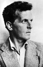

1889 yılının Nisan ayında Avusturya’da iki bebek doğdu. Her ikisinin de 20. yy dünyası üzerinde büyük bir etkisi olacaktı. Bunlardan biri Adolf Hitler’di (1889–1945). Altı gün sonra doğan diğer bebek ise filozof Ludwig Wittgenstein’dı (1889–1951).

Zengin bir çelik baronunun küçük oğlu Wittgenstein geleceğin Alman diktatörü ile aynı ortaokulda eğitim gördü. Her ikisinin de tarih öğretmenleri aynı kişiydi. I. Dünya Savaşı’nda her ikisi de orduda görev yaptı. Bu süreçte yaşadıkları deneyimler her ikisine de kitaplar yazdırdı.
Ancak yazdıkları kitaplar birbirinden çok farklıydı. Hitler’in kitabı Nazi totaliteryanizminin öfkeli manifestosu Mein Kampf’tı (Kavgam / 1925). Wittgenstein’in kitabı ise İtalyan esir kampında yazdığı kapsamlı felsefi metin Tractatus Logico-Philosophicus’tu (1922).
Wittgenstein’in yaşadığı süre içerisinde yayınlayacağı yegane felsefi metin olan kitap, 20. yy felsefesi için bir dönüm noktası teşkil ediyordu. Wittgenstein, kitabının felsefenin tüm temel problemlerini çözdüğünü iddia ediyordu. Kitabın yayınlanmasının ardından felsefeyle ilgilenmeyi bıraktı ve ilkokul öğretmenliği yapmaya başladı.
1926 yılında bir velinin on bir yaşındaki bir çocuğa aşırı şiddet uyguladığı yönündeki şikayeti üzerine işinden oldu. Yeniden felsefeyle ilgilenmeye başladı ve İngiltere’ye gitti. Cambridge’de 1929 yılında hocalık yapmaya başladı.
1938 yılında Hitler’in Avusturya’yı ilhakının ardından vatandaşlıktan çıktı ve İngiliz vatandaşı oldu. Eski sınıf arkadaşının hükümetiyle bizzat görüşerek kız kardeşinin Avusturya’dan ayrılmasına izin verilmesini istedi. Üstelik ailesi Yahudi kökenliydi. Wittgenstein II. Dünya Savaşı sırasında İngilizler için gönüllü oldu ve savaşın ardından öğretmenliği bıraktı. Ömrünün son yıllarını Philosophical Investigations (Felsefi Soruşturmalar) isimli kitabını yazmakla geçirdi. Bu eser ölümünün ardından 1953 yılında basılacaktı.
Wittgenstein, her iki kitabında da çeşitli felsefi problemlerle ilgili değerlendirmeler yaptı. Ona göre pek çok felsefi problem aslında dilsel sorunlardı. Zira insanlar dünyayı dil çerçevesinde anlamaktaydılar. Dildeki gevşeklik ise pek çok gereksiz felsefi karmaşaya neden oluyordu. Altmış iki yaşında Cambridge’de prostat kanserinden öldü.
Ek Bilgiler
1- 1938 yılında Avusturya’yı işgal eden Naziler, Wittgenstein ve erkek kardeşinden kız kardeşlerinin ülkeden ayrılabilmesi için gereken “gayri-Yahudi statüsü” karşılığında 1.7 ton altın istediler. 2009 yılı altın fiyatlarına göre bu miktar 62 milyon dolar ediyordu.
2- New York Times’ın 1998 yılında yaptığı profesyonel filozoflar anketinde Wittgenstein beşinci sırada yer aldı. Ondan önce gelenler ise sırasıyla Aristotle, Plato, Immanuel Kant ve Friedrich Nietzsche idi.
3- Doktoruna göre Wittgenstein’in son sözleri: “Söyle onlara, ben harika bir hayat yaşadım,” olmuştu.